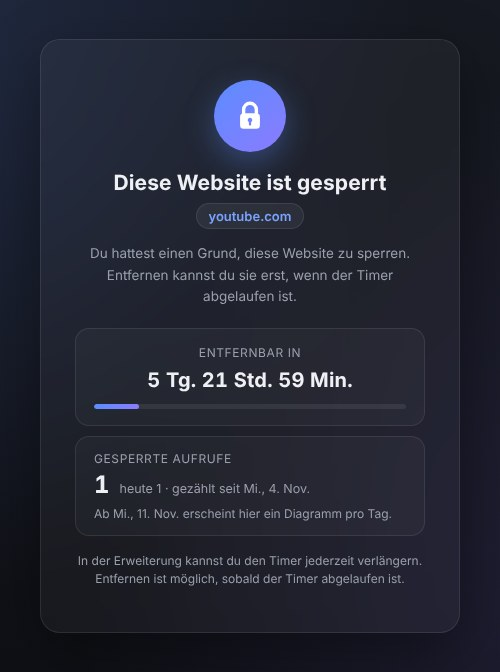

Kostenlos · Ohne Konto · Open Source
Hält stand, wenn du schwach wirst.
Sperre eine ablenkende Website und wähle einen Timer bis zu 30 Tagen. Vorher lässt sich die Sperre nicht entfernen. Nur der Timer lässt sich verlängern.

So funktioniert's
Drei Schritte – und im entscheidenden Moment ist die Sperre immer noch da.
-
Website sperren
Link eintippen oder per Rechtsklick „Diese Website sperren“ wählen. Subdomains und offene Tabs sind sofort blockiert.
-
Timer wählen
24 Stunden, 48 Stunden, 7 Tage oder 30 Tage. Falsche Website erwischt? 30 Sekunden lang kannst du die Sperre rückgängig machen.
-
Durchhalten lassen
Solange der Timer läuft, gibt es keinen Entfernen-Button. Verlängern geht immer, verkürzen nie.
Für die Tage, auf die es ankommt
Tage statt Minuten: lang genug für Prüfungsphase, Homeoffice oder eine echte Pause.
-
Prüfungsphase
YouTube sperren bis zur letzten Prüfung – ob Abi, Matura oder Uni.
-
30 Tage Pause
30 Tage Instagram-Pause, die du nicht abbrichst.
-
Homeoffice
Nachrichten und Social Media bleiben bis Freitag zu.
Was du bekommst
- Einen Timer, den du nur verlängern kannst. Ist er abgelaufen, bleibt die Website gesperrt, bis du sie entfernst.
- Eine Zählung, wie oft eine gesperrte Website aufgerufen wurde – nach einer Woche mit Tagesdiagramm.
- Einen ehrlichen Hinweis, wenn der Blocker ausgeschaltet war: wann und wie lange.
- Eine kurze Kontrolle vor riskanten Sperren, etwa bei google.com, das auch Gmail mitsperrt.
- Komplett auf Deutsch (und Englisch), passend zur Sprache deines Browsers.
- Für immer kostenlos. Falls später kostenpflichtige Extras dazukommen, fällt nichts Kostenloses weg.
Was er nicht kann
- Er ist nicht unumgehbar. Wie jede Erweiterung lässt er sich ausschalten oder entfernen – und Entfernen beendet alle Sperren.
- In Inkognito-Fenstern sperrt er nur, wenn du es in den Details der Erweiterung erlaubst.
- Auf dem Handy läuft er nicht: Chrome für Android und iOS kennt keine Erweiterungen.
- Er sperrt ganze Seiten, kein YouTube-Video, das in eine andere Website eingebettet ist.
Deine Liste bleibt in deinem Browser
Kein Konto, keine Server, keine Analyse. Die Erweiterung liest nie die Seiten, die du besuchst, und der Code ist für alle einsehbar.
- Deine Sperrliste und ihre Timer werden nur in deinem Browser gespeichert.
- Jede Store-Version ist auf GitHub markiert – du kannst genau den Code lesen, den du installiert hast.
- Der Zugriff auf alle Websites dient nur dazu, statt der Websites auf deiner Liste die Countdown-Seite zu zeigen. Zur Datenschutzerklärung.
Der Entwickler hat offengelegt, dass er deine Daten nicht erhebt oder verwendet.
Ehrliche Antworten
Kann ich eine Website früher entsperren?
Nein. Solange der Timer läuft, kannst du ihn nur verlängern. Ist er abgelaufen, bleibt die Website gesperrt, bis du sie entfernst.
Ich habe die falsche Website gesperrt. Was jetzt?
Klicke innerhalb von 30 Sekunden auf „Rückgängig“: Der Button steht unter der neuen Sperre im Erweiterungsfenster und auf der Countdown-Seite. Danach lässt sich die Sperre erst nach Ablauf des Timers entfernen.
Brauchst du die Website vorher, bleibt nur, die Erweiterung zu entfernen – damit wird auch deine ganze Sperrliste gelöscht.
Kann ich die Erweiterung nicht einfach ausschalten?
Doch. Solange sie aus ist, wird nichts gesperrt. Sie soll spontanes Surfen verhindern, nicht unentfernbar sein. Schaltest du sie wieder ein, zeigt sie dir, wann und wie lange sie aus war.
Warum braucht sie Zugriff auf alle Websites?
Chrome erlaubt einer Erweiterung nur dann, eine Website umzuleiten, wenn sie Zugriff darauf hat – und du kannst jede beliebige Webseite sperren. Der Zugriff dient nur dazu, statt der Websites auf deiner Liste die Countdown-Seite zu zeigen, bereits offene Tabs neu zu laden und zu erkennen, auf welcher Website du bist, wenn du sie sperren willst.
Sperrt sie auch in Inkognito-Fenstern?
Nur, wenn du es erlaubst: chrome://extensions öffnen, bei Locked Site Blocker auf „Details“ klicken und „Im Inkognitomodus zulassen“ einschalten. In Edge heißt die Einstellung „Im InPrivate-Modus zulassen“.
Ist sie wirklich kostenlos?
Ja. Sperren und Timer bleiben kostenlos. Wenn du sie unterstützen willst, findest du in der Erweiterung einen Button dafür.
Etwas funktioniert nicht.
Schreib an support@lockedsiteblocker.com oder eröffne ein Issue auf GitHub.